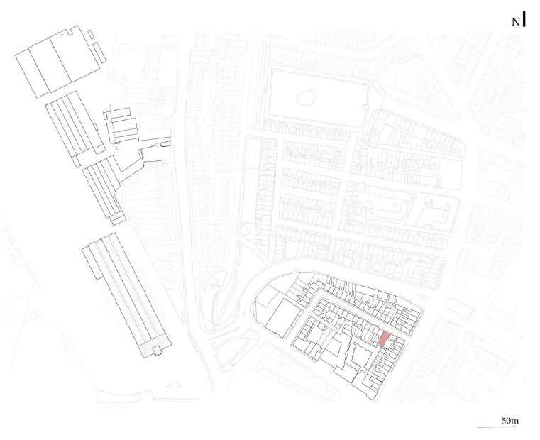
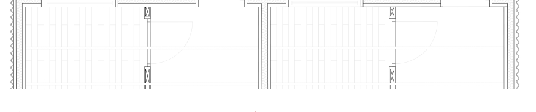

06 — Academic · Year 3
The project responds to the ongoing housing crisis in Dublin by proposing a typology for emergency accommodation that refuses the institutional scale and character of existing provision. The brief asked for a building that could offer temporary shelter without reproducing the conditions of institutionalisation.
The design is organised around a series of shared spaces — a courtyard, a communal kitchen, a garden — that allow individual rooms to remain small while offering genuine amenity. The section mediates between the scale of the city and the scale of inhabitation.



